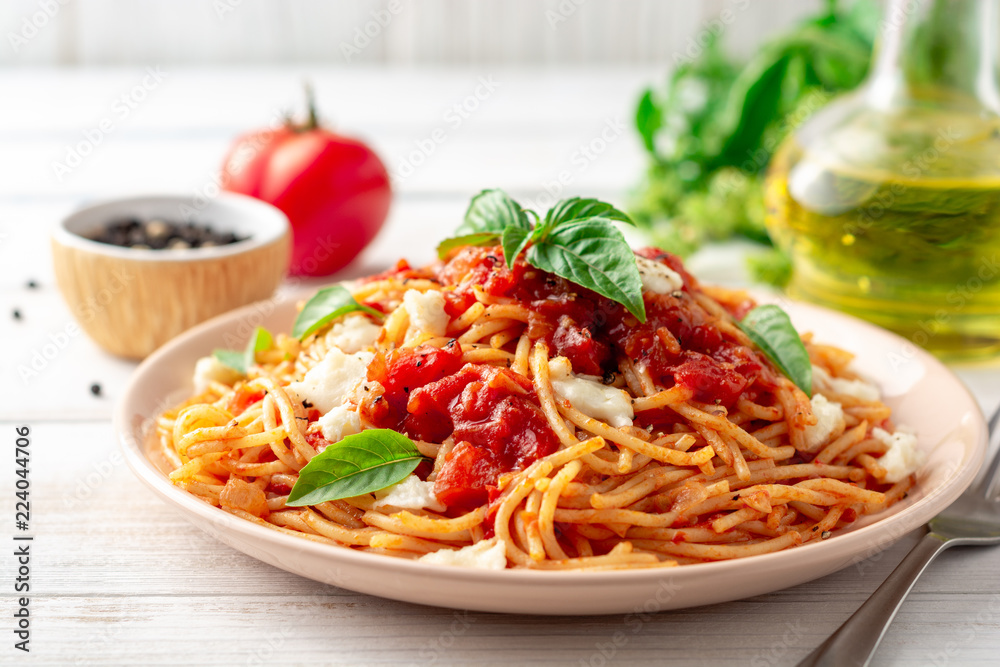

Spaghetti

Description
Spaghetti (Italian: [spaˈɡetti]) is a long, thin, solid, cylindrical pasta. It is a staple food of traditional Italian cuisine. Like other pasta, spaghetti is made of milled wheat, water, and sometimes enriched with vitamins and minerals. Italian spaghetti is typically made from durum-wheat semolina. Usually the pasta is white because refined flour is used, but whole wheat flour may be added. Spaghettoni is a thicker form of spaghetti, while spaghettini is a thinner form. Capellini is a very thin spaghetti, sometimes known colloquially as "angel hair pasta", while Vermicelli refers to intermediate widths, varying between the United States and Italy.
Originally, spaghetti was notably long, but shorter lengths gained in popularity during the latter half of the 20th century and now it is most commonly available in 25–30 cm (10–12 in) lengths. A variety of pasta dishes are based on it and it is frequently served with tomato sauce, meat or vegetables.
Ingredients
- 1 tbsp olive oil
- 4 rashers smoked streaky bacon, finely chopped
- 2 medium onions, finely chopped
- 2 carrots, trimmed and finely chopped
- 2 celery sticks, finely chopped
- 2 garlic cloves finely chopped
- 2-3 sprigs rosemary leaves picked and finely chopped
- 500g beef mince
- For the bolognese sauce
- 2 x 400g tins plum tomatoes
- small pack basil leaves picked, ¾ finely chopped and the rest left whole for garnish
- 1 tsp dried oregano
- 2 fresh bay leaves
- 2 tbsp tomato purée
- 1 beef stock cube
- 1 red chilli deseeded and finely chopped (optional)
- 125ml red wine
- 6 cherry tomatoes sliced in half
- To season and serve
- 75g parmesan grated, plus extra to serve
- 400g spaghetti
- crusty bread to serve (optional)
Steps
- Put a large saucepan on a medium heat and add 1 tbsp olive oil.
- Add 4 finely chopped bacon rashers and fry for 10 mins until golden and crisp.
- Reduce the heat and add the 2 onions, 2 carrots, 2 celery sticks, 2 garlic cloves and the leaves from 2-3 sprigs rosemary, all finely chopped, then fry for 10 mins.
- Stir the veg often until it softens.
- Increase the heat to medium-high, add 500g beef mince and cook stirring for 3-4 mins until the meat is browned all over.
- Add 2 tins plum tomatoes, the finely chopped leaves from ¾ small pack basil, 1 tsp dried oregano, 2 bay leaves, 2 tbsp tomato purée, 1 beef stock cube, 1 deseeded and finely chopped red chilli (if using), 125ml red wine and 6 halved cherry tomatoes. Stir with a wooden spoon, breaking up the plum tomatoes.
- Bring to the boil, reduce to a gentle simmer and cover with a lid. Cook for 1 hr 15 mins stirring occasionally, until you have a rich, thick sauce.
- Add the 75g grated parmesan, check the seasoning and stir.
- When the bolognese is nearly finished, cook 400g spaghetti following the pack instructions.
- Drain the spaghetti and either stir into the bolognese sauce, or serve the sauce on top. Serve with more grated parmesan, the remaining basil leaves and crusty bread, if you like.